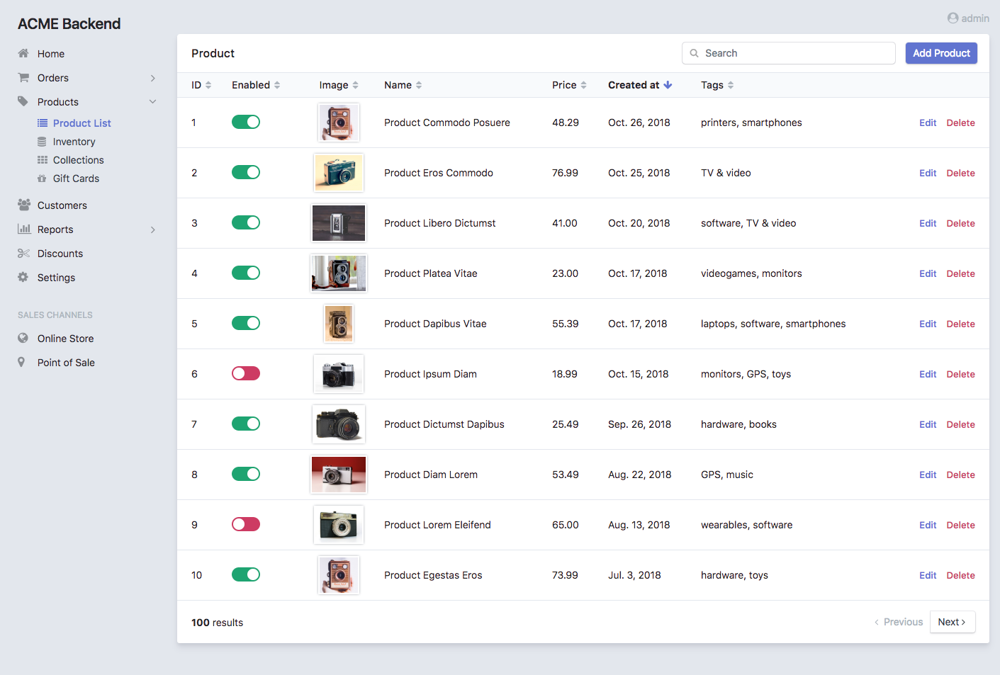
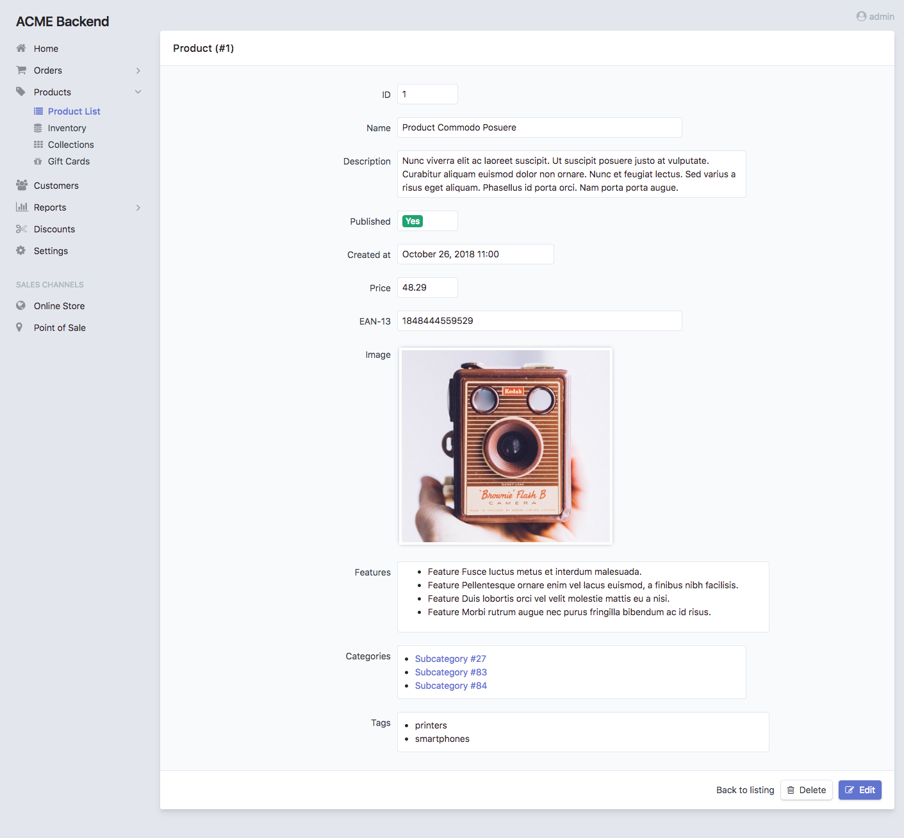
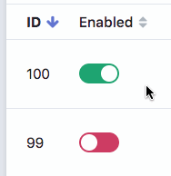

Chapter 5. List, Search and Show Views Configuration¶
This chapter explains how to customize the read-only views: list, search
and show. You’ll learn all their configuration options and how to override
or tweak their templates.
List, Search and Show Views¶
The List View displays the items that match the given criteria and provides automatic pagination and column sorting:
The Search View displays the results of any query performed by the user.
It reuses most of the design and features of the list view to ensure a
consistent user experience:
The Show View displays the contents of a given entity:
General Configuration¶
In order to make examples more concise, this section only shows the
configuration for the list view, but you can apply the exact same options to
the other search and show views.
Customize the Title of the Page¶
This option refers both to the value of the <title> element and to the visible
title displayed at the top of the page. By default the title is just the name of
the entity. Define the title option to set a custom page title:
# config/packages/easy_admin.yaml
easy_admin:
entities:
Customer:
class: App\Entity\Customer
label: 'Customers'
list:
title: "Most recent customers"
# ...
The title value can include the following special variables:
%entity_label%, resolves to the value defined in thelabeloption of the entity. If you haven’t defined it, this value will be equal to the entity name. In the example above, this value would beCustomers.%entity_name%, resolves to the entity name, which is the YAML key used to configure the entity in the backend configuration file. In the example above, this value would beCustomer.%entity_id%, it’s only available for theshowview and it resolves to the value of the primary key of the entity being showed. Even if the option is calledentity_id, it also works for primary keys with names different fromid.
Caution
In Symfony applications, YAML values enclosed with % and % have a
special meaning (they are considered container parameters). Escape these
values doubling the % characters:
# config/packages/easy_admin.yaml
easy_admin:
entities:
Customer:
class: App\Entity\Customer
label: 'Customers'
list:
title: '%%entity_label%% listing'
# ...
If several entities use the same custom title, you can define the default title
for all entities in the global list.title and show.title options (these
global titles are always overridden by the title defined by each entity):
# config/packages/easy_admin.yaml
easy_admin:
list:
title: 'list.%%entity_label%%'
show:
title: '%%entity_label%% (#%%entity_id%%)'
Display a Help Message in the Page¶
Entities can define a global help message that is displayed below the title of the page. This is useful to add instructions or warning messages for the end users (e.g. “The upload process can take a lot of time (don’t close the browser window)”).
The help message is defined with the help configuration option, which can be
added to the entity (all views display the same message) and to each of the
entity views:
# config/packages/easy_admin.yaml
easy_admin:
entities:
Customer:
class: App\Entity\Customer
help: 'Global message displayed in all views'
# ...
list:
help: 'The list view overrides the global help message'
# ...
show:
# 'help' is not defined, so the global help message is displayed
# ...
search:
# use the null value to not display the inherited global help message
help: null
# ...
# ...
Customize the Number of Rows Displayed¶
By default, listings in the list and search display a maximum of 15
rows. To change this value, define the max_results option under the global
list key or the local list key of any entity:
# config/packages/easy_admin.yaml
easy_admin:
list:
max_results: 30
entities:
Category:
list:
max_results: 10
# ...
In addition, the show view displays a maximum of 10 items for fields related
with other entities (e.g. if Category and Product entities are related,
it displays a maximum of 10 products when browsing the details of some
category). To change this value, define the max_results option under the
global show key or the local show key of any entity:
# config/packages/easy_admin.yaml
easy_admin:
show:
max_results: 20
entities:
Category:
show:
max_results: 5
# ...
Customize the Properties Displayed¶
By default, the show view displays all the entity properties and the
list and search views make some “smart guesses” to decide which columns
to display to make listings look good.
Use the fields option to explicitly set the properties to display:
# config/packages/easy_admin.yaml
easy_admin:
entities:
Customer:
class: App\Entity\Customer
list:
fields: ['id', 'firstName', 'lastName', 'phone', 'email']
# if the field name contains a dot, it's the property of a Doctrine association
list:
# this config displays the 'email' and 'phone' properties of the
# Doctrine entity associated via the 'user' property of 'Customer'
fields: ['id', 'name', 'age', 'user.email', 'user.phone']
# Doctrine associations are also supported in the 'search' view. This config looks
# for data in the 'email' and 'phone' properties of the associated 'user' entity
search:
fields: ['name', 'user.email', 'user.phone']
# ...
This option is also useful to reorder the properties, because by default they are displayed in the same order as defined in the related Doctrine entity.
In the case of the search view, this fields option defines the
properties included in the search query. Otherwise, the query is performed on
all entity properties except those with special data types, such as binary,
blob, object, etc.
Customize the Properties Appearance¶
When entity properties are not configured explicitly, the backend displays them with the most appropriate appearance according to their data types. If you prefer to control their appearance, start by using the extended field configuration:
# config/packages/easy_admin.yaml
easy_admin:
entities:
Customer:
class: App\Entity\Customer
list:
fields: ['id', 'name', { property: 'email', label: 'Contact' }]
# ...
Instead of using a string to define the property (e.g. 'email') you have to
define a hash with the name of the property ({ property: 'email' }) and the
options you want to define for it ({ ..., label: 'Contact' }).
If your entity contains lots of properties, consider using the alternative YAML sequence syntax to improve the legibility of your backend configuration. The following example is equivalent to the above example:
# config/packages/easy_admin.yaml
easy_admin:
entities:
Customer:
class: App\Entity\Customer
list:
fields:
- id
- name
- { property: 'email', label: 'Contact' }
# ...
These are the options that you can define for each field:
property(mandatory): the name of the property to be displayed. This is the only mandatory option when using the extended field configuration format.label(optional): the title displayed for the field (as the column name in thelistandsearchviews and as the<label>element in theshowview).If you don’t define this option or set it to
null, the title is generated automatically as the “humanized” version of the property name (e.g.publishedis displayed asPublishedanddateOfBirthasDate of birth).If you don’t want to display any title for a field (e.g. when displaying an image in the “avatar” property) set this option to
false. This also sets thesortableoption tofalsefor the field.css_class(optional): the CSS class applied to the parent HTML element that encloses the field contents. In thelistandsearchviews, this class is also applied to the<th>header of the column associated with this field. For example, to align the contents of some column to the right, usecss_class: text-righttemplate(optional): the name of the custom template used to render the contents of the field. This option is fully explained later in this chapter.type(optional): the type of data stored in the property, which affects how the contents are displayed. The allowed values are:Any of the Doctrine types:
array,association,bigint,blob,boolean,date,datetime,datetimetz,decimal,float,guid,integer,json_array,object,simple_array,smallint,string,text,time.Any of the custom EasyAdmin types:
email,file,image,raw,tel,toggle,url(they are explained later in this chapter).
The fields of the list and search views define another option:
sortable(optional): iftruethe backend allows to sort results by this property; set it tofalseto disable sorting. All properties are sortable by default except virtual properties (explained later in this chapter) and those related with Doctrine associations of any type.
The fields of the show view can define another option:
help(optional): the help message displayed below the field contents.
Tip
In addition to these options defined by EasyAdmin, you can define any custom option for the fields. This way you can create very powerful backend customizations, as explained in this tutorial: How to Define Custom Options for Entity Properties.
Formatting Dates and Numbers¶
Customizing Date and Time Properties¶
By default, these are the formats applied to date and time properties (read the date configuration options in the PHP manual if you don’t understand the meaning of these formats):
date:Y-m-dtime:H:i:sdatetime:F j, Y H:i
These default formats can be overridden in two ways: globally for all entities
and locally for each entity property. The global formats option sets the
formats for all entities and their properties:
# config/packages/easy_admin.yaml
easy_admin:
formats:
date: 'd/m/Y'
time: 'H:i'
datetime: 'd/m/Y H:i:s'
entities:
# ...
The values of the date, time and datetime options are passed to the
format() method of the DateTime class, so you can use any of the
date configuration options defined by PHP.
Date/time formatting can also be defined in each property configuration using
the format option. This local option always overrides the global format:
# config/packages/easy_admin.yaml
easy_admin:
entities:
Customer:
class: App\Entity\Customer
list:
fields:
- { property: 'dateOfBirth', format: 'j/n/Y' }
# ...
# ...
Customizing Numeric Properties¶
Numeric properties (bigint, integer, smallint, decimal,
float) are formatted by default according to the locale of your Symfony
application. This formatting can be overridden globally for all entities or
locally for each property.
The global formats option applies the same formatting for all entities:
# config/packages/easy_admin.yaml
easy_admin:
formats:
# ...
number: '%.2f'
entities:
# ...
In this case, the value of the number option is passed to the sprintf()
function, so you can use any of the PHP format specifiers.
Numeric properties can also define their formatting using the format
option. This local option always overrides the global format:
# config/packages/easy_admin.yaml
easy_admin:
entities:
Product:
class: App\Entity\Product
list:
fields:
- { property: 'serialNumber', format: '%010s' }
- { property: 'margin', format: '%01.2f' }
# ...
# ...
Virtual Properties¶
Sometimes, it’s useful to display values which are not entity properties. For
example, if your Customer entity defines the firstName and lastName
properties, you may want to display a column called Name with both values
merged. These are called virtual properties because they don’t really exist as
Doctrine entity properties.
First add the virtual property to the entity configuration as any other property:
# config/packages/easy_admin.yaml
easy_admin:
entities:
Customer:
class: App\Entity\Customer
list:
# 'name' doesn't exist as a Doctrine entity property
fields: ['id', 'name', 'phone', 'email']
# ...
Now, if you reload the backend, you’ll see that the virtual property only
displays Inaccessible as its value. The reason is that name does not
match any of the entity’s properties. To fix this issue, add a new public method
in your entity called getName():
use Doctrine\ORM\Mapping as ORM;
/** @ORM\Entity */
class Customer
{
// ...
public function getName()
{
return $this->getFirstName().' '.$this->getLastName();
}
}
That’s it. Reload your backend and now you’ll see the value of this virtual property.
Note
The values or virtual properties are get using the PropertyAccess component
from Symfony, which requires to follow a strict syntax for getter names:
get + camelized version of the property name. Example: name ->
getName(); firstName -> getFirstName(); first_and_last_name ->
getFirstAndLastName().
By default, virtual properties are displayed as text contents. If your virtual
property is a boolean value or a date, use the type option to set a more
appropriate data type:
# config/packages/easy_admin.yaml
easy_admin:
entities:
Customer:
class: App\Entity\Customer
list:
fields:
- 'id'
# these virtual properties define their 'type' option to not display them as text
- { property: 'is_eligible', type: 'boolean' }
- { property: 'last_contact', type: 'datetime' }
# ...
The main limitation of virtual properties is that you cannot sort listings using these fields.
Sorting Entity Listings¶
By default the list and search views sort the rows in descending order
according to the value of the primary key. You can sort by any other entity
property using the sort configuration option:
# config/packages/easy_admin.yaml
easy_admin:
entities:
User:
# ...
list:
# if the sort order is not specified, 'DESC' is used
sort: 'createdAt'
search:
# use an array to also define the sorting direction
sort: ['createdAt', 'ASC']
Purchase:
# ...
# the 'sort' option supports Doctrine associations up to one level
# (e.g. 'sort: user.name' works but 'sort: user.group.name' won't work)
list:
sort: 'user.name'
search:
sort: ['user.name', 'ASC']
The sort option of each entity is only used as the default content sorting. If
the query string includes the optional sortField and sortDirection
parameters, their values override this sort option. This happens for example
when defining a different sorting in a custom menu and when clicking on the
listings columns to reorder the displayed contents.
Filtering Entities¶
A common need for backends is to filter the entities included in listings (for
example: don’t display expired offers, display only clients that spend more than
a given amount, etc.) You can achieve this with the features explained later in
this chapter to modify the behavior of the list, search and show views.
However, for simple filters it’s more convenient to use the dql_filter option,
which defines the conditions passed to the WHERE clause of the Doctrine query
used to get the entities displayed in the list and search views.
The following example manages the same User entity in two different ways using
a basic filter to differentiate each type of user:
# config/packages/easy_admin.yaml
easy_admin:
entities:
VipCustomers:
class: App\Entity\User
list:
dql_filter: 'entity.budget > 100000'
RegularCustomers:
class: App\Entity\User
list:
dql_filter: 'entity.budget <= 100000'
The Doctrine DQL expression defined in the dql_filter option must always use
entity as the name of the entity, regardless of your actual entity name.
Since this is a regular YAML configuration file, you can also include container parameters inside the filter to use different values depending on the environment or even dynamic values:
# config/packages/easy_admin.yaml
easy_admin:
entities:
VipCustomers:
class: App\Entity\User
list:
dql_filter: 'entity.budget > %customers.budget_threshold%'
# ...
The value of the dql_filter can combine several conditions (in fact, you can
put anything that is considered valid as a WHERE clause in a Doctrine query):
# config/packages/easy_admin.yaml
easy_admin:
entities:
UrgentIssues:
class: App\Entity\Issue
list:
dql_filter: "entity.label = 'CRITICAL' OR entity.priority > 4"
ImportantIssues:
class: App\Entity\Issue
list:
dql_filter: "entity.priority > 2 AND entity.numComments > 10"
AllIssues:
class: App\Entity\Issue
Note
By default the dql_filter option from the list view is also used in the
search view. If you prefer to apply different filters, define the
dql_filter option explicitly for the search view:
# config/packages/easy_admin.yaml
easy_admin:
entities:
Issues:
class: App\Entity\Issue
list:
dql_filter: "LOWER(entity.title) LIKE '%%issue%%'"
search:
# defining a different condition than 'list'
dql_filter: "entity.status != 'DELETED'"
# using an empty value to not apply any condition when searching
# elements (this prevents inheriting the 'dql_filter' value defined in 'list')
dql_filter: ''
Tip
Combine the dql_filter option with a custom menu (as explained in the next
chapters) to improve the navigation of the backend.
Property Types Defined by EasyAdmin¶
In addition to the Doctrine data types, properties can use any of the following data types defined by EasyAdmin.
Email Data Type¶
It displays the contents of the property as a clickable mailto: link:
# config/packages/easy_admin.yaml
easy_admin:
entities:
Product:
class: App\Entity\User
list:
fields:
- { property: 'contact', type: 'email' }
# ...
# ...
URL Data Type¶
It displays the contents of the property as a clickable link which opens in a new browser tab:
# config/packages/easy_admin.yaml
easy_admin:
entities:
Product:
class: App\Entity\User
list:
fields:
- { property: 'blogUrl', type: 'url' }
# ...
# ...
Telephone Data Type¶
It displays the contents of the property as a clickable telephone number. Beware that some browsers don’t support these links:
# config/packages/easy_admin.yaml
easy_admin:
entities:
Product:
class: App\Entity\User
list:
fields:
- { property: 'workPhoneNumber', type: 'tel' }
# ...
# ...
Toggle and Boolean Data Types¶
If an entity is editable, the list view applies the type: 'toggle'
option to all its boolean properties. This data type makes these properties be
rendered as “flip switches” that allow to toggle their values very easily:
When you change the value of any boolean property, an Ajax request is made to actually change that value in the database. If something goes wrong, the switch automatically returns to its original value and it disables itself until the page is refreshed to avoid further issues:
In you prefer to disable these “toggles”, define the type of the property
explicitly as boolean:
# config/packages/easy_admin.yaml
easy_admin:
entities:
Product:
class: App\Entity\Product
list:
fields:
- { property: 'hasStock', type: 'boolean' }
# ...
# ...
Now the boolean value is rendered as a simple label and its value cannot be
modified from the list view:
Image Data Type¶
If any of your properties stores the URL or path of an image, this type allows
you to display the actual image instead of its path. In most cases, you just
need to set the type property to image:
# config/packages/easy_admin.yaml
easy_admin:
entities:
Product:
class: App\Entity\Product
list:
fields:
- { property: 'photo', type: 'image' }
# ...
# ...
In the above example, the photo property is displayed as a <img> HTML
element whose src attribute is the value stored in the property.
If the property stores relative paths, define the base_path option to set the
path to be prefixed to the image path:
# config/packages/easy_admin.yaml
easy_admin:
entities:
Product:
class: App\Entity\Product
list:
fields:
- { property: 'photo', type: 'image', base_path: '/img/' }
# ...
# ...
The value of the base_path can be a relative or absolute URL and even a
Symfony parameter:
# relative path
- { property: 'photo', type: 'image', base_path: '/img/products/' }
# absolute path pointing to an external host
- { property: 'photo', type: 'image', base_path: 'http://static.acme.org/img/' }
# Symfony container parameter
- { property: 'photo', type: 'image', base_path: '%vich_uploader.mappings.product_image%' }
The image base path can also be set in the entity, to avoid repeating its value for different properties or different views:
# config/packages/easy_admin.yaml
easy_admin:
entities:
Product:
class: App\Entity\Product
image_base_path: 'http://static.acme.org/img/'
list:
fields:
- { property: 'photo', type: 'image' }
# ...
# ...
The base paths defined for a property always have priority over the one defined globally for the entity.
File Data Type¶
If any of your properties stores the URL or path of a file, this type allows you
to display a link to the actual file. In most cases, you just need to set the
type property to file:
# config/packages/easy_admin.yaml
easy_admin:
entities:
Product:
class: App\Entity\Product
list:
fields:
- { property: 'instructions', type: 'file' }
# ...
# ...
In the above example, the instructions property is displayed as an <a>
HTML element whose href attribute is the value stored in the property.
If the property stores relative paths, define the base_path option to set the
absolute or relative path to be prefixed to the file path:
# config/packages/easy_admin.yaml
easy_admin:
entities:
Product:
class: App\Entity\Product
list:
fields:
- { property: 'instructions', type: 'file', base_path: '/pdf/' }
# ...
# ...
The file base path can also be set in the entity, to avoid repeating its value for different properties or different views:
# config/packages/easy_admin.yaml
easy_admin:
entities:
Product:
class: App\Entity\Product
file_base_path: 'http://static.acme.org/pdf/'
list:
fields:
- { property: 'instructions', type: 'file' }
# ...
# ...
The base paths defined for a property always have priority over the one defined globally for the entity.
The name of the file is displayed by default as the text of the <a> link.
If this is undesired, define the filename property to set the <a> text
explicitly:
# config/packages/easy_admin.yaml
easy_admin:
entities:
Product:
class: App\Entity\Product
list:
fields:
- { property: 'instructions', type: 'file', filename: 'View instructions (PDF)' }
# ...
# ...
Raw Data Type¶
All the string-based data types are escaped before displaying them. For that
reason, if the property stores HTML content, you’ll see the HTML tags instead of
the rendered HTML content. In case you want to display the contents unescaped,
define the type option with a raw value:
# config/packages/easy_admin.yaml
easy_admin:
entities:
Product:
class: App\Entity\Product
list:
fields:
- { property: 'features', type: 'raw' }
# ...
# ...
Advanced Design Configuration¶
This section explains how to completely customize the design of the list,
search and show views. EasyAdmin defines several Twig templates to
create its interface. These are the templates related to list, search
and show views:
@EasyAdmin/default/layout.html.twig, the common layout that decorates the rest of the main templates;@EasyAdmin/default/show.html.twig, renders the contents stored by a given entity;@EasyAdmin/default/list.html.twig, renders the entity listings and the search results page;@EasyAdmin/default/paginator.html.twig, renders the pagination of thelistview.
In addition, EasyAdmin uses several template fragments to render the value of
each property according to its type. For example, properties of type string
are rendered with the @EasyAdmin/default/field_string.html.twig template.
There are also other fragments to render special values, such as
@EasyAdmin/default/label_null.html.twig for null values. Check out the
src/Resources/views/ directory of the bundle to see all the available
templates.
Depending on your needs, there are several customization options:
Override the default EasyAdmin templates using Symfony’s overriding mechanism. Useful to add or change minor things in the default interface.
Use your own templates to display the list/search/show views and all their elements. Useful if you want to customize the interface entirely.
Use a template fragment to customize just one property of some entity in the list/search/show views. Useful to completely change how some property is displayed.
Overriding the Default Templates Using Symfony’s Mechanism¶
Symfony allows to override any part of third-party bundles. To override one
of the default EasyAdmin templates, create a new template inside
templates/bundles/EasyAdminBundle/default/ with the same path as the
template to override. Example:
your-project/
├─ ...
└─ templates/
└─ bundles/
└─ EasyAdminBundle/
└─ default/
├─ list.html.twig
├─ edit.html.twig
└─ paginator.html.twig
Tip
Add an empty {{ dump() }} call in your custom templates to know which
variables are passed to them by EasyAdmin.
Instead of creating the new templates from scratch, you can extend from the
original templates and change only the parts you want to override. However, you
must use a special syntax inside extends to avoid an infinite loop:
{# templates/bundles/EasyAdminBundle/default/layout.html.twig #}
{# DON'T DO THIS: it will cause an infinite loop #}
{% extends '@EasyAdmin/default/layout.html.twig' %}
{# DO THIS: the '!' symbol tells Symfony to extend from the original template #}
{% extends '@!EasyAdmin/default/layout.html.twig' %}
{% block sidebar %}
{# ... #}
{% endblock %}
Using your Own Templates to Display the list/search/show Views¶
Add the templates option (globally or only to some entities) to define the
path of the Twig template used to render each part of the interface:
# config/packages/easy_admin.yaml
easy_admin:
design:
# these custom templates are applied to all entities
templates:
paginator: 'admin/my_paginator.html.twig'
layout: 'admin/layouts/custom_layout.html.twig'
label_null: 'admin/null_value.html.twig'
entities:
Customer:
# ...
# these custom templates are only applied to this entity and
# they override any global template defined in 'design.templates'
templates:
list: 'admin/customizations/customer_list.html.twig'
field_string: 'admin/types/long_strings.html.twig'
The name of the config option matches the name of the template files inside
src/Resources/views/ (e.g. layout, field_string, label_null,
etc.) The value of the options can be any valid Twig template path.
Tip
Add an empty {{ dump() }} call in your custom templates to know which
variables are passed to them by EasyAdmin.
Instead of creating the new templates from scratch, you can extend from the
original templates and change only the parts you want to override. Suppose you
only want to change the search form of the list view. To do so, create the
following list.html.twig template extending from the default one and
override only the search_action Twig block:
{# templates/admin/list.html.twig #}
{% extends '@EasyAdmin/default/list.html.twig' %}
{% block search_action %}
{# ... customize the search form ... #}
{% endblock %}
Customizing the Template Used to Render Each Property¶
This method is useful to use a custom template just to render a single property
of some entity. To do so, define the path of the custom template in the
template option of the property:
# config/packages/easy_admin.yaml
easy_admin:
# ...
entities:
Invoice:
list:
fields:
- { property: 'total', template: 'admin/invoice_total.html.twig' }
Instead of using the default field_float.html.twig template, the value of
the total property is rendered with the admin/invoice_total.html.twig
template. The value of template can be any valid Twig template path.
Tip
Add an empty {{ dump() }} call in your custom templates to know which
variables are passed to them by EasyAdmin.
Next chapter: Chapter 6. Edit and New Views Configuration